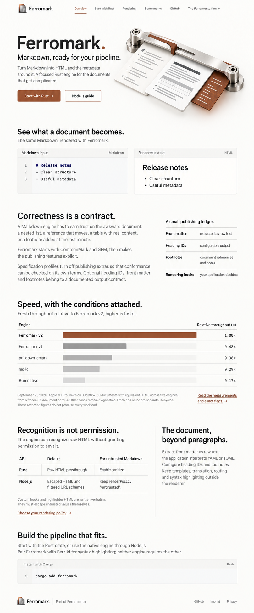
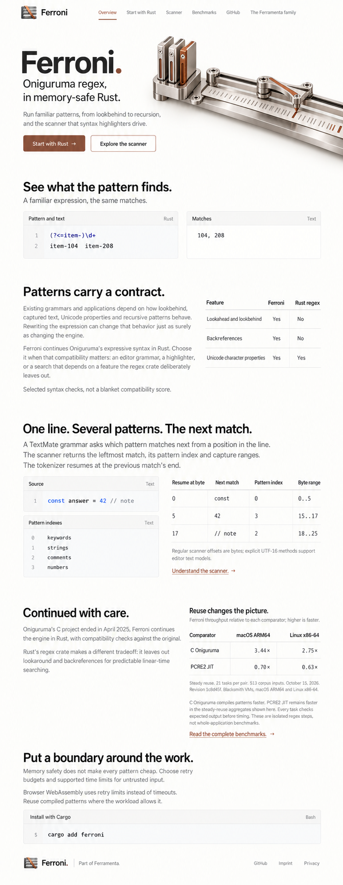
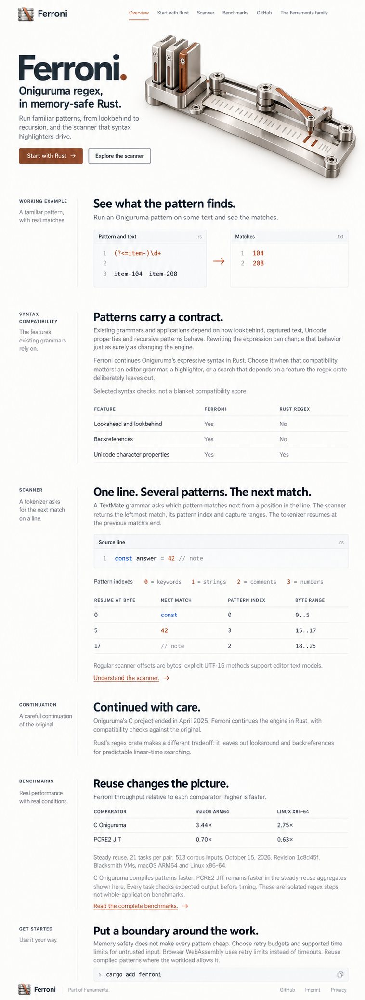
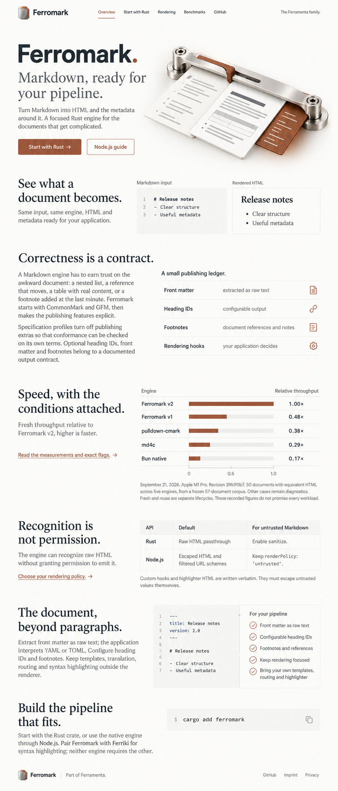
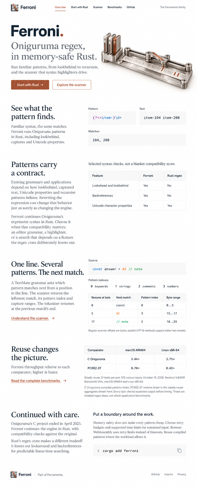

29 · Ferromark
Open editorial tables, decimal-aligned measurements and generous captions.
Six fresh Imagegen homepage concepts explore composition, editorial hierarchy, worked examples and table design. Warm, precise and light, with clear reading space.
Decorative backgrounds have been removed from the HTML baseline. This round stays at the visual-design level.
Direction A
A spacious technical magazine with an asymmetric editorial hierarchy and tables treated as publication typography.

Open editorial tables, decimal-aligned measurements and generous captions.

Open editorial tables, decimal-aligned measurements and generous captions.
Direction B
A precision handbook whose worked examples organize the page, with annotated technical data rather than generic dashboard tables.

Annotated specimens and field ledgers connect examples, output and constraints.

Annotated specimens and field ledgers connect examples, output and constraints.
Direction C
A warmer, type-led editorial page with broad reading passages and evidence presented as a designed spread.

Broad evidence spreads, platform groups and clear numerical hierarchy.

Broad evidence spreads, platform groups and clear numerical hierarchy.